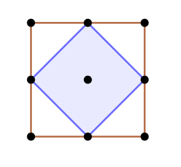

El torneo

El castillo tiene un patio cuadrado que antiguamente estaba custodiado por una persona vigilante.
Cansada de hacer siempre el mismo recorrido alrededor del patio, decidió moverse desde el punto medio de cada lado.
- ¿Qué figura forma esta nueva caminata?
- ¿Crees que es correcto decir que "camina en diagonal"?
- ¿Cuántas diagonales tiene un cuadrado?
- Si el patio fuese rectangular, ¿qué figura haría el recorrido entre los puntos medios de cada lado?
A veces el lenguaje cotidiano no coincide con el matemático, mira en un diccionario todos los significados de la palabra diagonal.